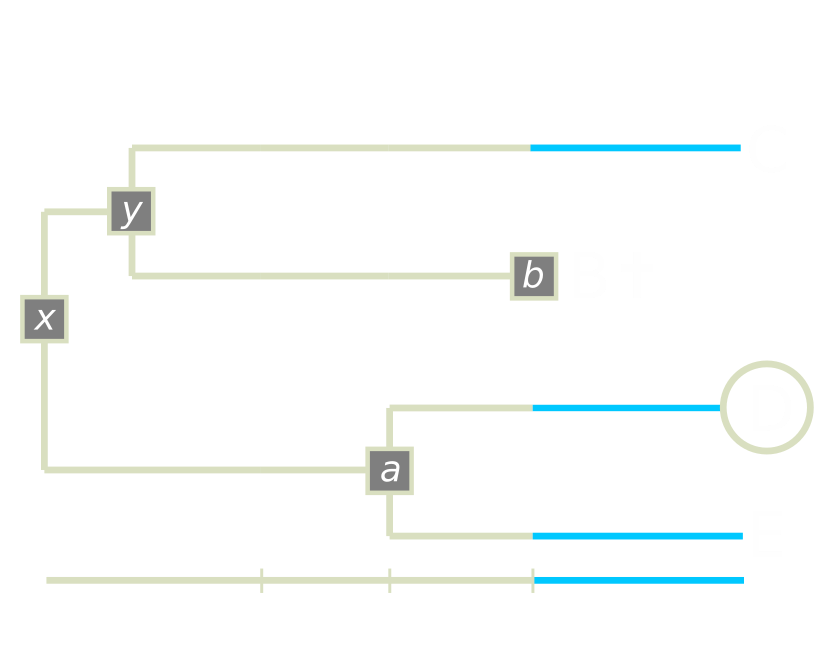

Step 10: Repeating steps 1, 2, 3 and 4 again. Until a stop.rule condition is triggered (see step 11 - stop).
rexp(1, sum(n * (speciation + extinction)))
or in the treats algorithm:rexp(1, sum(lineage$n * (bd.params$speciation + bd.params$extinction)))